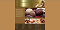
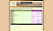
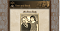
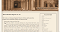

My Practice Assignments
- Mobile Panini
- This was the first practice assignment and was designed to see if we could do basic HTML ot acheive the expected results.
- TSS Coach Page
- This was a practice for basic CSS.
- Pandaisia Chocolates
- This was a practice assignment that focused on the layout side of CSS.

- DLR Morning Schedule
- This was a practice assignment that focused on working with tables in HTML and CSS.

- The Ferris Family
- This was basically just a continuation of Tutorial 6 "The Komatsu Family".

- Customer Information
- This was an extention of Tutorial 7 "Red Ball Pizza" where we continued using webforms.
- Star Dust Stories
- This was a practice about JavaScript and how to use it.
- Lyman Hall Events
- This was a practice about using JavaScript to generate a table.
- Federalist Paper #10
- This was a practice for learning how to style things and append things in JavaScript.

- Espresso Machine Order
- This was a practice about validating and submiting forms using JavaScript